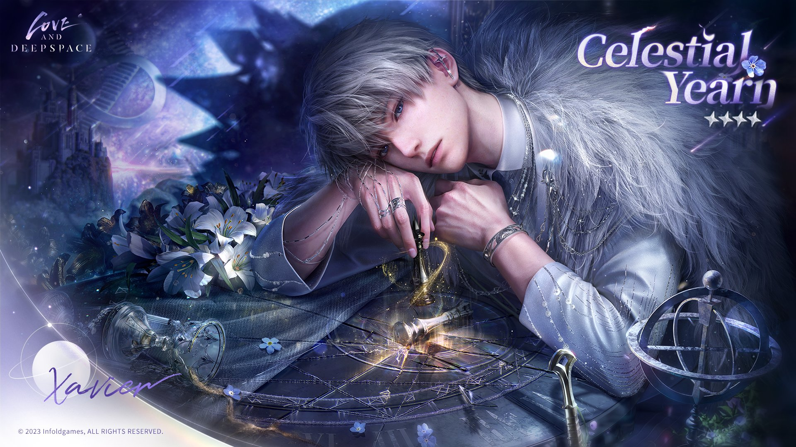

👑 Xavier Shen | セイヤ 👑

My cuddly bunny, my twin starlight, my eternal reminder that self-love isn't selfish.
Xavier has so many motifs that I love and adore, but I confess that I almost quit this game on day one.
When I realized that we share the same birthday, I decided to stay, and I'm glad I did.
Xavier is so unashamed in his love for us that it makes me want to treat myself better. It reminds me that I deserve
more than the bare minimum, that I deserve a happy ending as much as anyone else. His story is one of a devotion that defies
fate, that changes fate.
On the surface, Xavier is the eepy, sleepy star prince who just wants to cuddle and eat warm food,
but beneath that is an immortal man who wants to grow old with you, to make it to the end of the story,
to live happily ever after, with you.
Here's how to make a star will shine only for you in every timeline:
🐰 Ingredients 🐰
- Expert Swordsmanship
- Power Suppresion Collar
- Chronic Fatigue Syndrome
- Stubbornness that Defies Fate
- A Way with Animals
- Slow Days and Sleepy Cuddles
- Billion Dollar Bounties
- Secret Identities
- Possessiveness Born from Fear of Loss
- Handmade Map of the Cosmos
💤 Instructions 💤
- Be born an immortal prince.
- CAUTION: Immortality has a cost.
- Fall in love.
- Learn the secret of your "immortality," of your mother's demise, of her demise.
- CAUTION: You can't go back once you know.
- Defy your father, your fate, her fate.
CAUTION: Failure has a cost.
- Fail. Pay the cost.
- Defy fate and try again.
- WARNING:FAILURE HAS A COST.
- Fail, again. Pay the cost, again.
- Defy fate. Try again.
- WARNING:FAILURE HAS A COST.
- Fail who knows how many times at this point.
- CAUTION:There may be a limit to this.
- Decide there is no limit.
- Search time and space for the right world, the right future.
- Accidentally become a hero.
- REMINDER: You deserve a happy ending.
- Find her. Avoid her.
- CAUTION:It may not be enough.
- Decide that this time will be different.
- Defy fate. Live. Be with her.
- REMINDER: You deserve a happy ending.
Xavier Shen was created by Papergames and is published globally by Infold Games
🪄 Niou Masaharu | 🌟 Home | 📸 Luke Pearce